Beans for Atlas
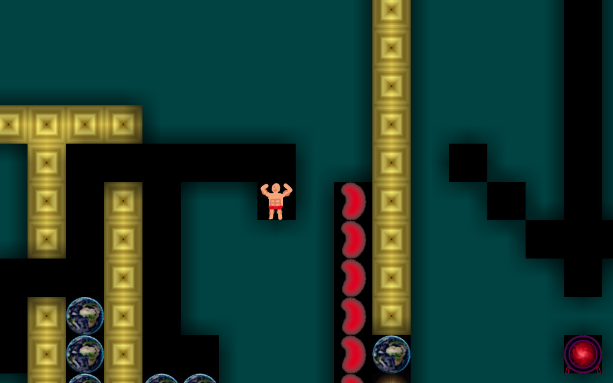
collect enough beans to leave the level, inspired by boulder dash
miniBeansjam 6 (2020 - 48 hours)
Theme: You move the world
Rollercoaster Breakdown
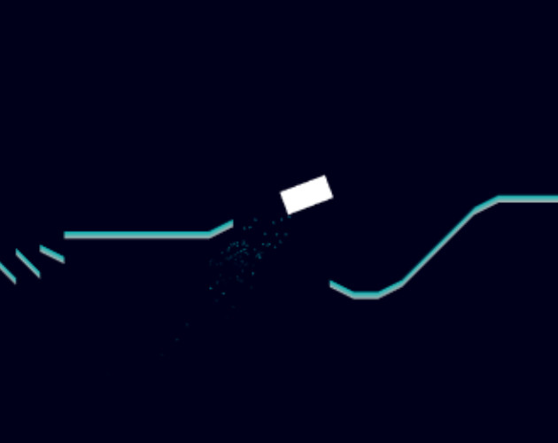
the rollercoaster is breaking down, surivive as long as possible
Alakajam 4 (2018 - 48 hours)
Theme: Falling
4F - Faith, Forests, Fire and Floods
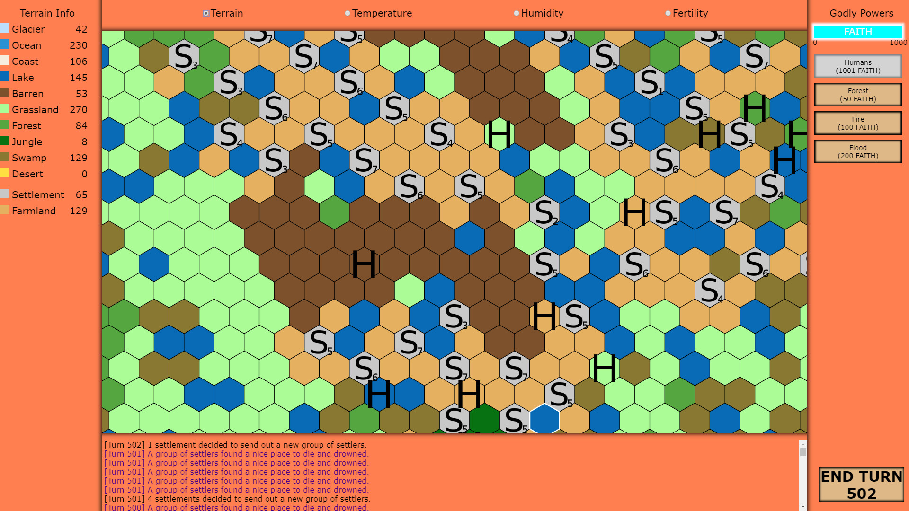
a turn based, cellular automaton, god game where you use your powers to make the world more habitable (or not)
Ludum Dare 41 (2018 - 48 hours)
Theme: Combine 2 Incompatible Genres
Yet Another Lunar Lander
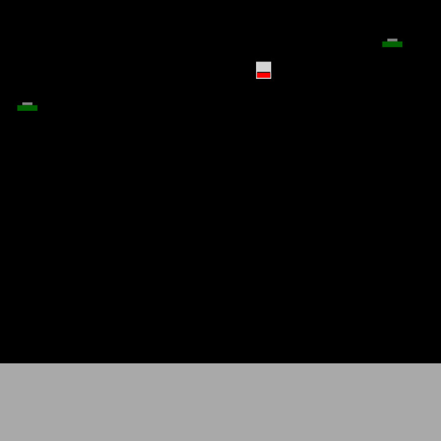
land on the moon while avoiding UFOs
One hour game jam 143 (2018 - 1 hour)
Theme: Moon
Treasure Diver
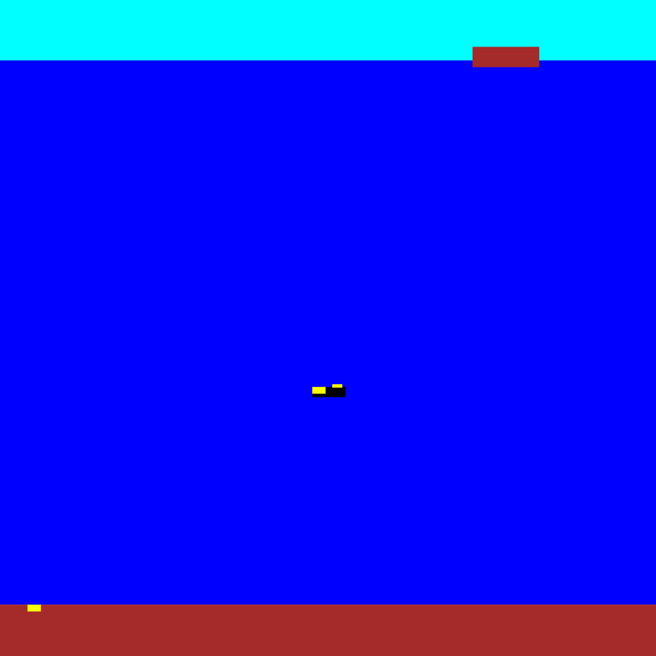
dive into the sea and collect treasures
One hour game jam 142 (2018 - 1 hour)
Theme: Submerged
Slimes in Panic
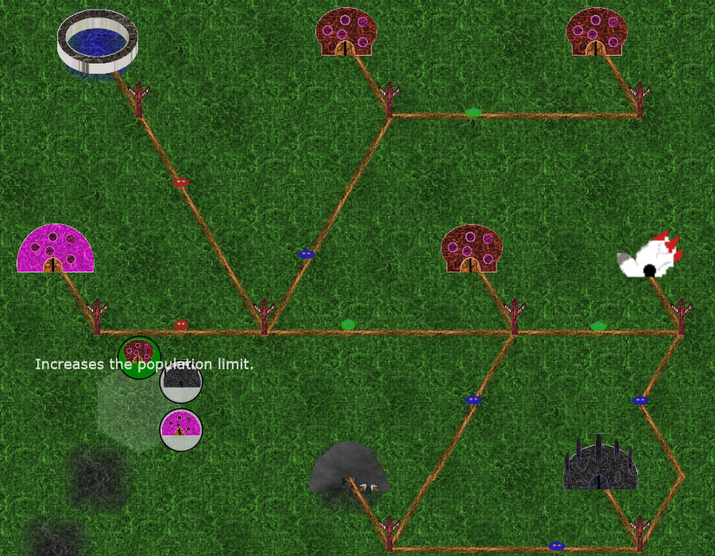
a game where you build production buildings and connect them by roads while little slimes transport resources
Ludum Dare 38 (2017 - 48 hours)
Theme: A Small World
Chariot Arena Battle
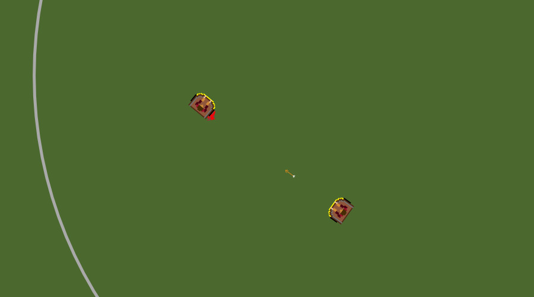
a multiplayer game where you battle other chariots by firing arrows at them (server no longer exists, game no working anymore)
Ludum Dare 36 (2016 - 48 hours)
Theme: Ancient Technology
Shapeocalypse
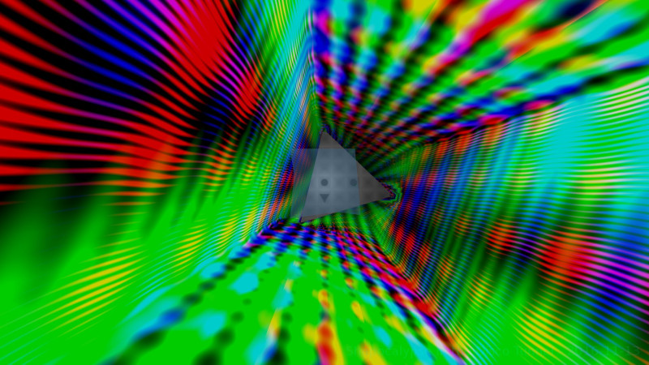
move through a tunnel changing colors to the music while changing your shape to fit through the correct exit (post compo version)
Ludum Dare 35 (2016 - 48 hours)
Theme: Shapeshift
Snowman Defense
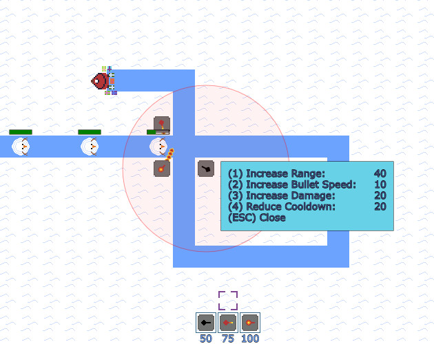
a tower defense game where you need to defeat the snowmen who want to ruin christmas by stealing presents
Devmania 2015 (2015 - 17 hours)
Theme: Winter (probably)
Damacreat (Classic)
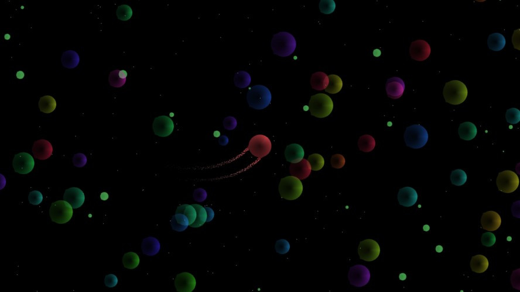
consume stuff and grow
Ludum Dare 34 (2015 - 48 hours)
Theme: Two Button Controls, Growing
You are the (idle?) Monster!
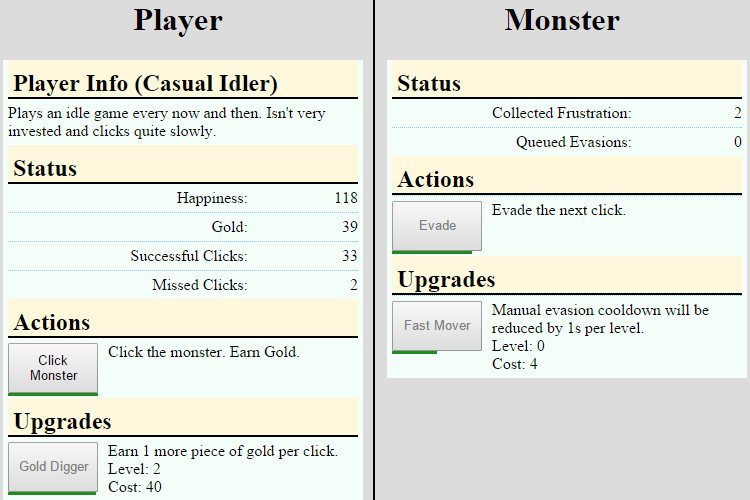
a game where you fight against players of an idle game who use more and more way to automate their game
Ludum Dare 33 (2015 - 48 hours)
Theme: You are the Monster
Swap to the Beat
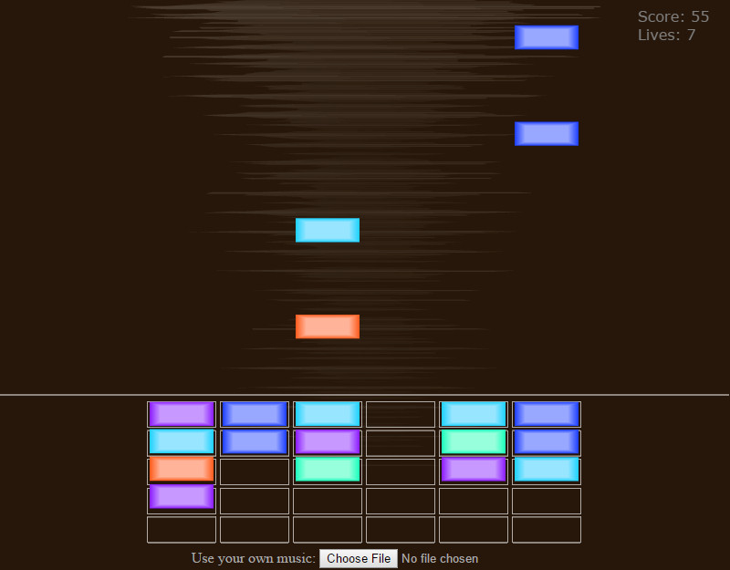
kind of a mix of tetris and match 3
ZFX Action 7 (2015 - 48 hours)
Theme: An indie game where you swap towers while bards write songs about you.
Replay
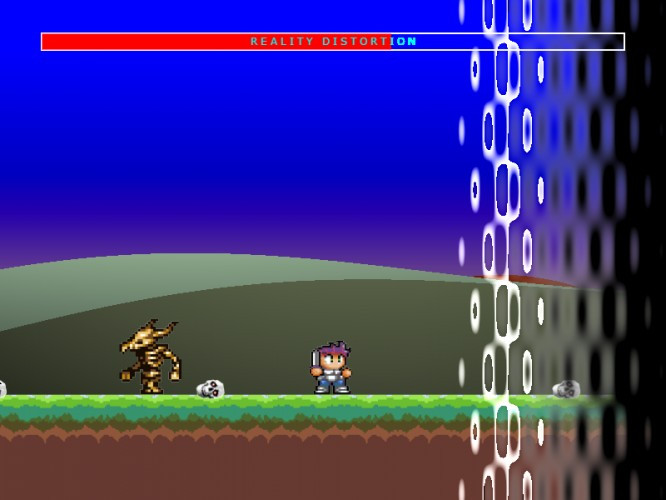
move backwards in time and resurrect slain enemies to fix the timeline
Mini LD 57 (2015 - 7 days)
Theme: Reversed
Triangles in Fear
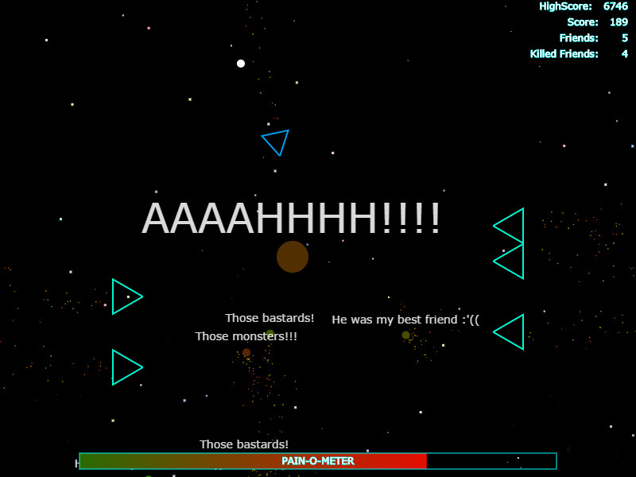
avoid triangles until your ragemeter is full so you can destroy them. scream into your microphone to increase your rage even faster
ZFX Action 6 (2015 - 48 hours)
Theme: An arcade game where you avoid triangles with your friends
Opposing Worlds
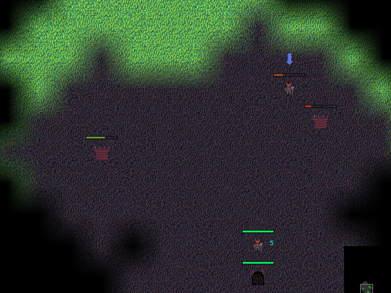
a turn based strategy game where you conquer castles and produce units fighting against 3 computer controlles enemies
Ludum Dare 30 (2014 - 48 hours)
Theme: Connected Worlds
Castle Engineer
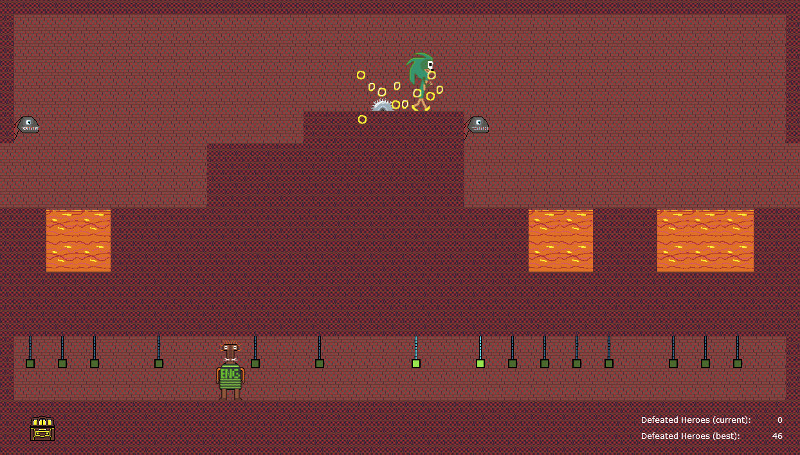
manually trigger traps from beneath the surface to prevent famous heroes from stealing your treasure
Ludum Dare 29 (2014 - 48 hours)
Theme: Beneath The Surface
Gorilla
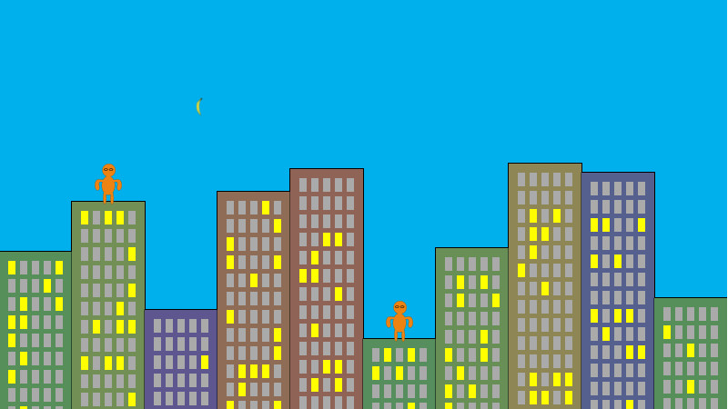
recreated stage creation of an old game (gorilla.bas)
3 Hour Game Jam (2014 - 3 hours)
Theme: Banana
3hgjwitch
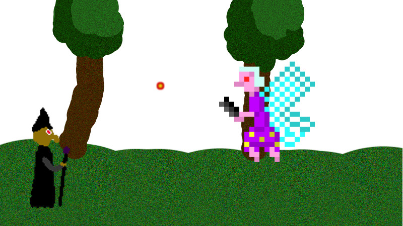
simple fighting game between a witch and a tooth fairy
3 Hour Game Jam (2014 - 3 hours)
Theme: Witch
Granny Loosetooth and the Toothfairies
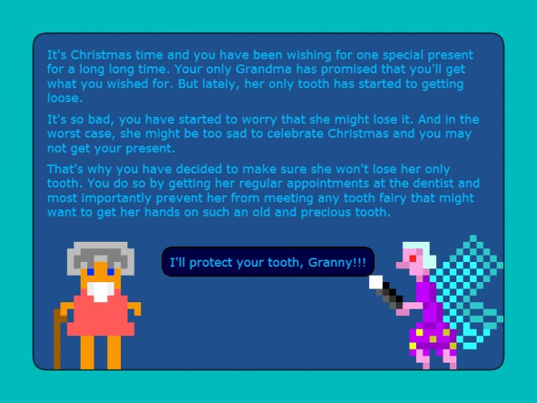
use various food items to lead a granny to the dentist without losing her last tooth
Ludum Dare 28 (2013 - 48 hours)
Theme: You've Only Got One
Ludum Dare 28 WarmUp
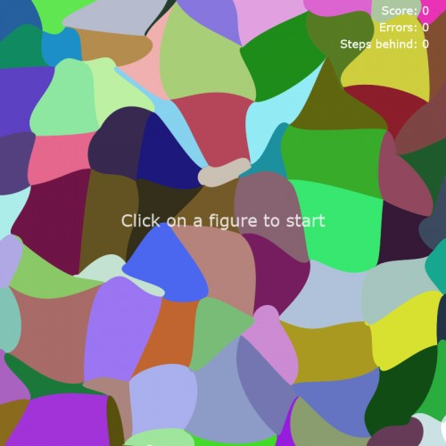
follow a light through fields made up using bezier curves
Ludum Dare 28 WarmUp (2013 - 48 hours)
Theme: -
Alien Attack
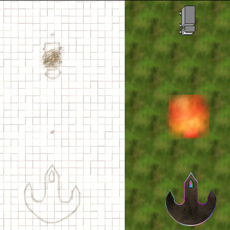
a new feature activates every 10 seconds
Ludum Dare 27 (2013 - 48 hours)
Theme: 10 Seconds
20 Seconds
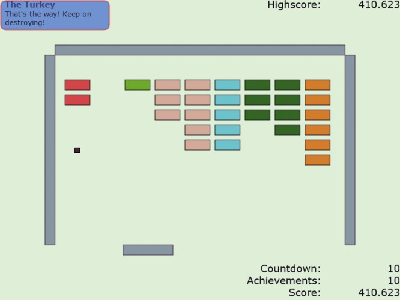
switch between various minimalistic games every 20 seconds
Ludum Dare 26 (2013 - 48 hours)
Theme: Minimalism
LD26 Warmup
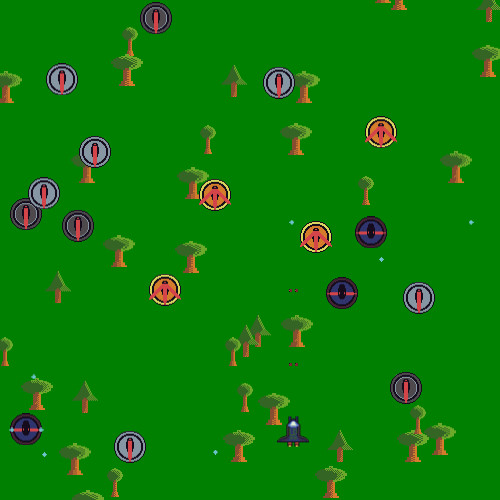
a simple bullet hell game
Ludum Dare 26 WarmUp (2013 - 48 hours)
Theme: -
GitHub Space Off
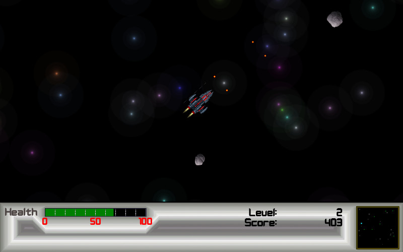
Asteroids with elastic collisions between objects
Github GameOff 2012 (2012 - 30 days)
Theme: Push